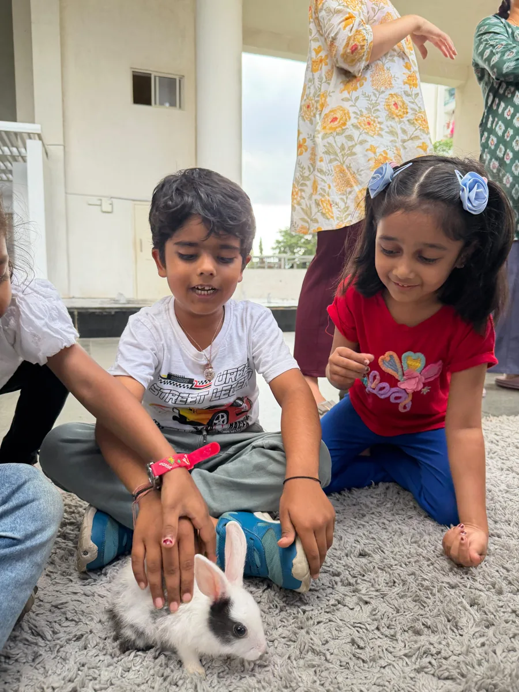

Dear Parents,
Imagine you are a 3-year-old child again. And today is your first day at school.
Your favourite teacher welcomes you with warm hugs and high fives. You keep your bag, then head out to play, dance and enjoy your heart out. Not a single adult stops you from asking a hundred questions throughout the day.
You discover the world, one insect at a time. Finding your own way is the only way at school. Your little feet wander, your little hands experiment, and you find your own ways to express yourself.
On the last day before the summer holidays, all you want is to not leave school. And until you're back, your school waits: to hear your stories, read your little letters, and discover the world again, through your eyes.